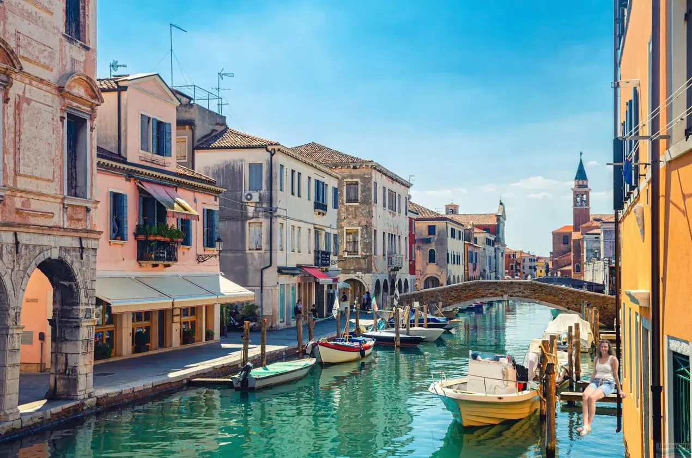
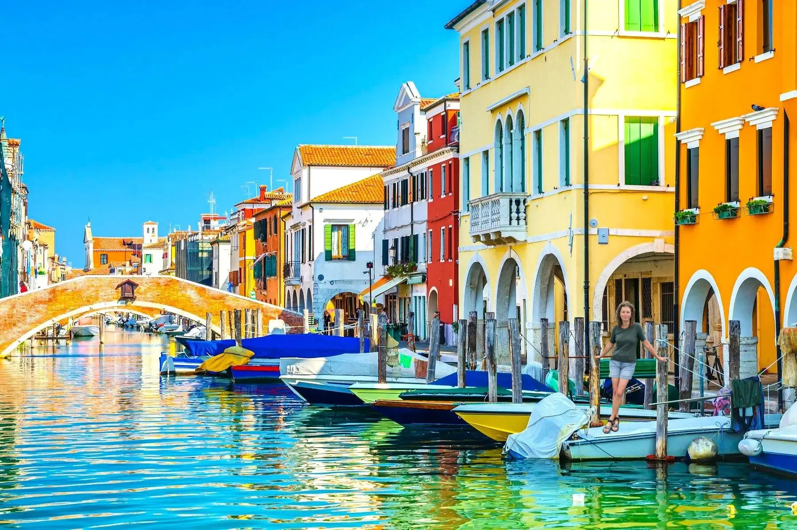
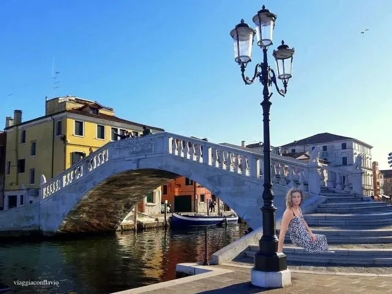
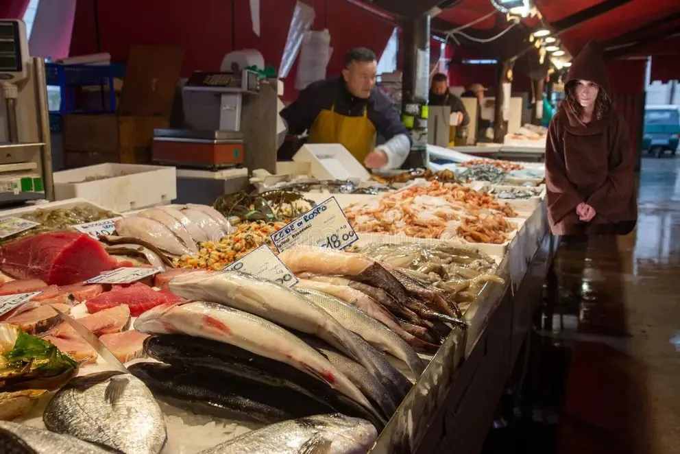
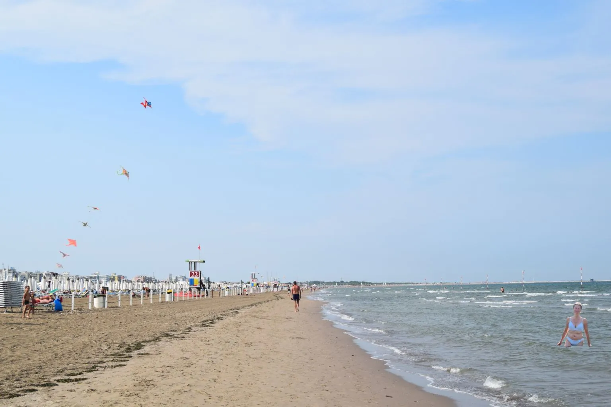
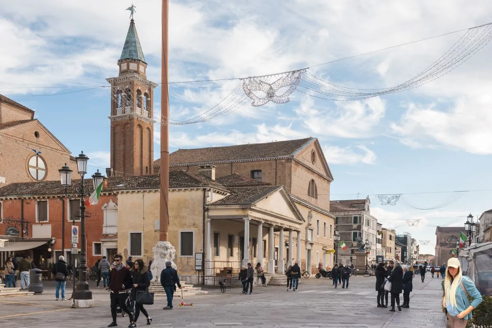

Chioggia – Benátky v malém
Objevte kouzlo laguny, historické kanály a dlouhé písečné pláže.
Co vidět
- Corso del Popolo
- Most Vigo
- Kanál Vena
- Rybí trh (Mercato Ittico)
- Katedrála Santa Maria Assunta
- Muzeum Laguna Sud
Pláže – Sottomarina
Dlouhá písečná pláž, bary, sport a rodinná atmosféra.
Pro gurmánky – místní speciality
Chioggia je rájem pro milovníky čerstvých ryb, mořských plodů a tradičních benátských receptů. Místní kuchyně je jednoduchá, poctivá a založená na čerstvosti surovin z laguny.
- Sarde in saor – sladkokyselé sardinky s cibulí, rozinkami a piniovými oříšky.
- Moeche – malé měkké kraby, místní sezónní delikatesa.
- Risotto di Go – krémové rizoto z ryby „ghiozzo“ typické pro lagunu.
- Fritto misto – mix smažených ryb a mořských plodů, ideální k vínu.
- Seppie al nero – sépie na černo s omáčkou z vlastního inkoustu.
- Vongole veraci – čerstvé škeble z laguny, často podávané s těstovinami.
Doporučené ubytování
Barbara’s Rooms
Moderní a velmi dobře hodnocené ubytování v centru Chioggie.
Zobrazit na Booking.com
Fotogalerie






Události a trhy
Rybí trh, čtvrteční trh a festival Palio della Marciliana.